정보처리기사(구) (2014-08-17 기출문제)
1과목: 데이터 베이스
1. 데이터베이스의 3층 스키마 중 모든 응용 시스템과 사용자들이 필요로 하는 데이터를 통합한 조직 전체의 데이터 베이스 구조를 논리적으로 정의하는 스키마는?
- 내부 스키마
- 개념 스키마
- 외부 스키마
- 동적 스키마
(정답률: 73%)

2. 데이터베이스 설계 순서로 옳은 것은?
- 요구조건 분석 → 물리적 설계 → 논리적 설계 → 개념적 설계 → 데이터베이스 구현
- 요구조건 분석 → 개념적 설계 → 논리적 설계 → 물리적 설계 → 데이터베이스 구현
- 요구조건 분석 → 논리적 설계 → 개념적 설계 → 물리적 설계 → 데이터베이스 구현
- 요구조건 분석 → 논리적 설계 → 물리적 설계 → 개념적 설계 → 데이터베이스 구현
(정답률: 84%)
3. 다음 트리에서 터미널 노드 수는?
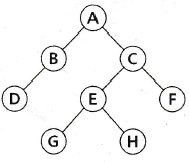
- 2
- 3
- 4
- 8
(정답률: 73%)
4. 제 2정규형에서 제 3정규형이 되기 위한 조건은?
- 이행적 함수 종속 제거
- 부분적 함수 종속 제거
- 다치 종속 제거
- 결정자이면서 후보 키가 아닌 것 제거
(정답률: 73%)
5. Which of the follwing does not belong to the DML statement of SQL?
- SELECT
- DELETE
- CREATE
- INSERT
(정답률: 81%)
6. 조건을 만족하는 릴레이션의 수평적 부분집합으로 구성하며, 연산자의 기호는 그리스 문자 시그마(σ)를 사용하는 관계대수 연산은?
- Select
- Project
- Join
- Division
(정답률: 75%)
7. 다음 릴레이션의 Degree와 Cardinality는?
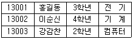
- Degree : 4, Cardinality : 3
- Degree : 3, Cardinality : 4
- Degree : 3, Cardinality : 12
- Degree : 12, Cardinality : 3
(정답률: 65%)
8. 트랜잭선의 특징으로 거리가 먼 것은?
- Consistency
- Isolation
- Durability
- Automatic
(정답률: 71%)
9. 병행제어 로킹(Locking) 단위에 대한 설명으로 옳지 않은 것은?
- 데이터베이스, 파일, 레코드 등은 로킹 단위가 될 수 있다.
- 로킹 단위가 작아지면 로킹 오버헤드가 감소한다.
- 로킹 단위가 작아지면 데이터베이스 공유도가 증가 한다.
- 한꺼번에 로킹 할 수 있는 단위를 로킹 단위라고 한다.
(정답률: 79%)
10. 순차 파일에 대한 옳은 내용 모두를 나열한 것은?
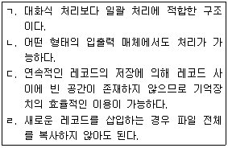
- ㄷ
- ㄷ, ㄹ
- ㄱ, ㄴ, ㄷ
- ㄴ, ㄷ, ㄹ
(정답률: 68%)
11. 데이터베이스의 특징으로 볼 수 없는 것은?
- real time accessibility
- concurrent sharing
- address reference
- continuous evolution
(정답률: 74%)
12. 데이터베이스의 정의 중 다음 설명과 관계되는 것은?
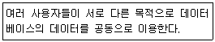
- Integrated Data
- Stored Date
- Shared Data
- Operational Data
(정답률: 80%)
13. 다음 설명이 의미하는 것은?
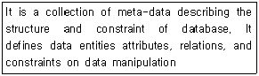
- DBMS
- Schema
- Transaction
- Domain
(정답률: 80%)
14. 데이터 모델의 종류 중 CODASYL DBTG 모델과 가장 밀접한 관계가 있는 것은?
- 계층형 데이터 모델
- 네트워크형 데이터 모델
- 관계형 데이터 모델
- 스키마형 데이터 모델
(정답률: 62%)
15. 뷰(view)에 대한 설명으로 옳지 않은 것은?
- 뷰는 create view 명령을 사용하여 정의한다.
- 뷰는 논리적 독립성을 제공한다.
- 뷰를 제거할 때는 DROP 문을 사용한다.
- 뷰는 저장장치 내에 물리적으로 존재한다.
(정답률: 80%)
16. 다음 그림과 같은 이진 트리를 후위 순회(postorder - traversal)한 결과는?
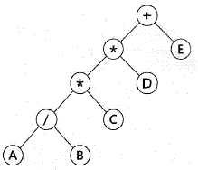
- + * * / A B C D E
- A / B * C * D + E
- + * A B / * C D E
- A B / C * D * E +
(정답률: 76%)
17. 데이터베이스에서 하나의 논리적 기능을 수행하기 위한 작업의 단위 또는 한꺼번에 모두 수행되어야 할 일련의 연산들을 의미하는 것은?
- COLLISION
- BUCKET
- SYNONYM
- TRANSACTION
(정답률: 75%)
18. 데이터베이스의 물리적 설계 단계와 거리가 먼 것은?
- 저장 레코드 양식 설계
- 레코드 집중의 분석 및 설계
- 트랜잭션 인터페이스 설계
- 접근 경로 설계
(정답률: 64%)
19. 시스템 카탈로그에 대한 설명으로 옳지 않은 것은?
- 사용자가 시스템 카탈로그를 직접 갱신할 수 있다.
- 일반 질의어를 이용해 내용을 검색할 수 있다.
- DBMS가 스스로 생성하고, 유지하는 데이터베이스 내의 특별한 테이블의 집합체이다.
- 데이터베이스 스키마에 대한 정보를 제공한다.
(정답률: 81%)
20. 스택(stack)에 대한 옳은 내용으로만 나열된 것은?
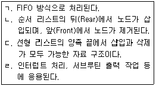
- ㄱ, ㄴ
- ㄴ, ㄷ
- ㄹ
- ㄱ, ㄴ, ㄷ, ㄹ
(정답률: 64%)
2과목: 전자 계산기 구조
21. PE(Processing Element)라 불리는 복수개의 산술, 논리연산 장치를 갖는 프로세서로 동기적으로 병렬처리를 수행하고 동시에 같은 기능을 수행하는 처리기를 무엇이라 하는가?
- 파이프라인 처리기(Pipeline Processor)
- 배열 처리기(Array Processor)
- 단일 처리기(Single Processor)
- 다중 처리기(Multi Processor)
(정답률: 39%)
22. 플립플롭이 가지고 있는 기능은?
- 전송 속도
- 기억 기능
- 증폭 기능
- 전원 기능
(정답률: 62%)
23. CPU의 메이저 상태(Major State)로 볼 수 없는 것은?
- Fetch
- Indirect
- Execute
- Direct
(정답률: 62%)
24. 입ㆍ출력 제어 방식에서 다음의 방식은 무엇인가?
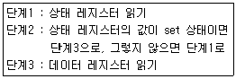
- 프로그램에 의한 I/O(programmed I/O)
- 인터럽트에 의한 I/O(interrupt I/O)
- DMA에 의한 I/O
- IOP(I/O 프로세서)
(정답률: 44%)
25. PC의 인터럽트(interrupt) 가운데 프린터에 용지가 부족할 때 발생되는 인터럽트는?
- PC 하드웨어 인터럽트
- 인텔 하드웨어 인터럽트
- PC 소프트웨어 인터럽트
- 응용 소프트웨어 인터럽트
(정답률: 65%)
26. 자기 테이프에 대한 설명 중 옳지 않은 것은?
- Direct access가 가능하다.
- 각 블록 사이에 간격(gab)이 존재한다.
- 7-9 bit 가 동시에 수록되고 전달된다.
- Sequential access가 가능하다.
(정답률: 41%)
27. 고정배선제어방식과 비교하여 마이크로프로그램을 이용한 제어방식의 특징으로 볼 수 없는 것은?
- 구조적이고 임의적인 설계가 가능하다.
- 경제적이며 시스템의 설계비용을 줄일 수 있다.
- 보다 용이한 유지보수 관리가 가능하다.
- 처리속도가 빠르고 시스템이 간단할 때 유리하다.
(정답률: 48%)
28. 인터럽트의 발생 요인으로 가장 적당하지 않은 것은?
- 정전 발생 시
- 부프로그램 호출
- 프로그램 착오
- 불법적인 인스트럭션 수행
(정답률: 57%)
29. 프로그램을 통한 입출력 방식에서 입출력장치 인터페이스에 포함되어야 하는 하드웨어가 아닌 것은?
- 데이터 레지스터
- 장치의 동작 상태를 나타내는 플래그(flag)
- 단어 계수기
- 장치 번호 디코더
(정답률: 49%)
30. 일반적으로 명령어 파이프라인이 정상적인 동작에서 벗어나게 하는 원인으로 틀린 것은?
- 자원 충돌(resource conflict)
- 데이터 의존성(data dependency)
- 분기 곤란(branch difficulty)
- 지연된 분기(delayed branch)
(정답률: 33%)
31. 1011 인 매크로 동작(Macro-operation)을 0101100인 마이크로 명령어(micro-instruction)주소로 변환하고자 할 때 사용되는 기법을 무엇이라 하는가?
- Carry-look-ahead
- time-sharing
- multiprogramming
- mapping
(정답률: 64%)
32. 상대 주소지정 방식을 사용하는 JUMP 명령어가 750번지에 저장되어 있다. 오퍼랜드 A = 56 일 때와 A = -61 일 때 몇 번지로 JUMP 하는가?(단, PC는 1씩 증가한다고 가정한다.)
- 806, 689
- 56, 745
- 807, 690
- 56, 689
(정답률: 51%)
33. 중앙처리장치와 기억장치 사이에 실질적인 대역폭(band-width)을 늘리기 위한 방법으로 사용하는 것은?
- 메모리 인터리빙
- 자기기억 장치
- RAM
- 폴링
(정답률: 60%)
34. 명령어 파이프라이닝을 사용하는 목적은?
- 기억용량 증대
- 메모리 엑세스의 효율증대
- CPU의 프로그램 처리속도 개선
- 입출력 장치의 증설
(정답률: 57%)
35. 중앙 연산 처리장치의 하드웨어적인 요소가 아닌 것은?
- IR
- MAR
- MODEM
- PC
(정답률: 64%)
36. 공유-기억장치 다중프로세서 시스템에서 사용되는 상호연결 구조가 아닌 것은?
- 버스(bus)
- 큐브(cube)
- 크로스바 스위치
- 다단계 상호연결망
(정답률: 43%)
37. 컴퓨터 기억장치 주소설계시 고려사항으로 옳지 않은 것은?
- 주소를 효율적으로 나타내야 한다.
- 주소 표시는 16진법으로 표기해야 한다.
- 사용자에게 편리하도록 해야 한다.
- 주소공간과 기억공간을 독립시킬 수 있어야 한다.
(정답률: 49%)
38. 다음 중 순서논리회로가 아닌 것은?
- 플립플롭 회로
- 레지스터 회로
- 카운터 회로
- 가산기 회로
(정답률: 43%)
39. 프로그래머가 어셈블리 언어(Assembly language)로 프로그램을 작성할 때 반복되는 일련의 같은 연산을 효과적으로 처리하기 위해 필요한 것은?
- 매크로(MACRO)
- 함수(function)
- reserved instruction set
- 마이크로 프로그래밍(micro-programming)
(정답률: 73%)
40. 65536 워드(word)의 메모리 용량을 갖는 컴퓨터가 있다. 프로그램 카운터(PC)는 몇 비트인가?
- 8
- 16
- 32
- 64
(정답률: 62%)
3과목: 운영체제
41. 다음 설명에 해당하는 디렉토리 구조는?
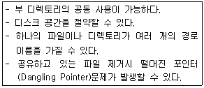
- 비순환 그래프 디렉토리 시스템
- 트리 구조 디렉토리 시스템
- 1단계 디렉토리 시스템
- 2단계 디렉토리 시스템
(정답률: 53%)
42. 목적 프로그램을 기억장소에 적재시키는 기능만 수행하는 로더로서, 할당 및 연결은 프로그래머가 프로그램 작성시 수행하며, 재배치는 언어번역프로그램이 담당하는 것은?
- Absolute Loader
- Compile And Go Loader
- Direct Linking Loader
- Dynamic Loading Loader
(정답률: 42%)
43. 프로세서의 상호 연결 구조 중 하이퍼 큐브 구조에서 각 CPU가 3개의 연결점을 가질 경우 CPU의 총 개수는?
- 8
- 16
- 32
- 65536
(정답률: 77%)
44. 프로세스의 정의로 거리가 먼 것은?
- 운영체제가 관리하는 실행 단위
- PCB를 갖는 프로그램
- 동기적 행위를 일으키는 주체
- 실행 중인 프로그램
(정답률: 72%)
45. 파일 디스크립터에 대한 설명으로 옳지 않은 것은?
- 사용자가 관리하므로 사용자가 직접 참조할 수 있다.
- 파일을 관리하기 위해 시스템이 필요로 하는 정보를 보관한다.
- 일반적으로 보조기억장치에 저장되어 있다가 파일이 개방(open)될 때 주기억장치로 옮겨진다.
- File Control Block 이라고도 한다.
(정답률: 68%)
46. 분산 처리 운영체제 시스템의 구축 목적으로 거리가 먼 것은?
- 보안성 향상
- 자원 공유의 용이성
- 연산 속도 향상
- 신뢰성 향상
(정답률: 72%)
47. 스레드(Thread)에 대한 설명으로 거리가 먼 것은?
- 하나의 스레드는 상태를 줄인 경량 프로세스라고도 한다.
- 프로세스 내부에 포함되는 스레드는 공통적으로 접근 가능한 기억장치를 통해 효율적으로 통신한다.
- 스레드를 사용하면 하드웨어, 운영체제의 성능과 응용 프로그램의 처리율을 향상시킬 수 있다.
- 하나의 프로세스에 여러 개의 스레드가 존재할 수 없다.
(정답률: 75%)
48. 운영체제의 운용 기법 중 중앙처리장치의 시간을 각 사용자에게 균등하게 분할하여 사용하는 체제로서 모든 컴퓨터 사용자에게 똑같은 서비스를 제공하는 것을 목표로 삼고 있으며, 라운드 로빈 스케줄링을 사용하는 것은?
- Real-time processing system
- Time sharing system
- Batch processing system
- Distributed processing system
(정답률: 75%)
49. 다음 설명에 해당하는 자원 보호 기법은?
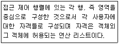
- Global Table
- Capability List
- Access Control List
- Lock/Key
(정답률: 32%)
50. UNIX의 특징으로 볼 수 없는 것은?
- 대화식 운영체제이다
- 다중 사용자 시스템(Multi-user system)이다.
- 높은 이식성과 확장성이 있다.
- 파일 시스템은 2단계 디렉토리 구조이다.
(정답률: 74%)
51. 운영체제의 역할로 거리가 먼 것은?
- 고급 언어로 작성된 소스 프로그램을 기계어로 변환시킨다.
- 사용자 간의 데이터를 공유하게 해 준다.
- 사용자와 컴퓨터 시스템 간의 인터페이스 기능을 제공한다.
- 입ㆍ출력 역할을 지원한다.
(정답률: 72%)
52. FIFO 스케줄링에서 3개의 작업 도착시간과 CPU 사용시간(burst time)이 다음 표와 같다. 이 때 모든 작업들의 평균 반환시간(turn arround time)은?(단, 소수점 이하는 반올림 처리한다.)
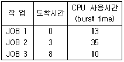
- 16
- 20
- 33
- 36
(정답률: 55%)
53. 분산 운영체제의 개념 중 강결합(TIGHTLY-COUPLED) 시스템의 설명으로 옳지 않은 것은?
- 프로세서간의 통신은 공유 메모리를 이용한다.
- 여러 처리기들 간에 하나의 저장장치를 공유한다.
- 메모리에 대한 프로세서 간의 경쟁 최소화가 고려되어야 한다.
- 각 사이트는 자신만의 독립된 운영체제와 주기억장치를 갖는다.
(정답률: 63%)
54. 주기억장치 관리 기법 중 Best-fit을 사용할 경우 12K의 프로그램이 할당받게 되는 영역 번호는?(단, 모든 영역은 현재 공백 상태이며, 탐색은 위에서 아래로 한다고 가정한다.)
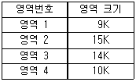
- 영역 1
- 영역 2
- 영역 3
- 영역 4
(정답률: 72%)
55. 파일 소유에 대한 사용자를 변경하는 UNIX 명령은?
- cat
- find
- chown
- finger
(정답률: 72%)
56. HRN(Highest Response-ratio Next) 스케줄링 방식에 대한 설명으로 옳지 않은 것은?
- 우선 순위를 계산하여 그 숫자가 낮은 것부터 높은 순으로 우선 순위가 부여된다.
- SJF 기법을 보완하기 위한 방식이다.
- 긴 작업과 짧은 작업 간의 지나친 불평등을 해소할 수 있다.
- 우선 순위 결정식은{{대기시간+서비스시간)/서비스시간} 이다.
(정답률: 65%)
57. 3개의 페이지 프레임(Frame)을 가진 기억장치에서 페이지 요청을 다음과 같은 페이지 번호 순으로 요청했을 때 교체 알고리즘으로 FIFO 방법을 사용한다면 몇 번의 페이지 부재(Fault)가 발생 하는가?(단, 현재 기억장치는 모두 비어 있다고 가정한다.)
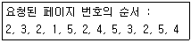
- 7
- 8
- 9
- 10
(정답률: 56%)
58. UNIX 파일 시스템의 구조에서 전체 파일 시스템에 대한 정보를 저장하고 있는 블록은?
- I-NODE 블록
- 데이터 블록
- 슈퍼 블록
- 부트 블록
(정답률: 41%)
59. 페이지(page) 크기에 대한 설명으로 옳은 것은?
- 페이지 크기가 작을 경우, 동일한 크기의 프로그램에 더 많은 수의 페이지가 필요하게 되어 주소 변환에 필요한 페이지 사상표의 공간은 더 작게 요구된다.
- 페이지 크기가 작을 경우, 페이지 단편화를 감소시키고 특정한 참조 지역성만을 포함하기 때문에 기억 장치 효율은 좋을수 있다.
- 페이지 크기가 클 경우, 페이지 단편화로 인해 많은 기억 공간을 낭비하고 페이지 사상표의 크기도 늘어난다.
- 페이지 크기가 클 경우, 디스크와 기억 장치 간에 대량의 바이트 단위로 페이지가 이동하기 때문에 디스크 접근 시간 부담이 증가되어 페이지 이동 효율이 나빠진다.
(정답률: 41%)
60. 시간 구역성(Tempral Locality)과 거리가 먼 것은?
- 스택
- 순환문
- 부프로그램
- 배열 순회
(정답률: 47%)
4과목: 소프트웨어 공학
61. 유지보수의 종류 중 소프트웨어 테스팅 동안 밝혀지지 않은 모든 잠재적인 오류를 수정하기 위한 보수 형태로서 오류의 수정과 진단 과정이 포함되는 것은?
- Perfective maintenance
- Adaptive maintenance
- Preventive maintenance
- Corrective maintenance
(정답률: 51%)
62. 소프트웨어 프로젝트를 효과적으로 관리하기 위해서는 3P에 초점을 맞추어야 한다. 3P에 직접 해당되지 않는 것은?
- People
- Program
- Problem
- Process
(정답률: 71%)
63. 소프트웨어의 재사용에 대한 설명으로 옳지 않은 것은?
- 표준화의 원칙을 무시할 수 있다.
- 프로젝트의 개발 위험을 줄여줄 수 있다.
- 프로젝트의 개발기간과 비용을 줄일 수 있다.
- 개발자의 생산성을 향상시킬 수 있다.
(정답률: 75%)
64. CASE에 대한 설명으로 거리가 먼 것은?
- 자동화된 기법을 통해 소프트웨어 품질이 향상된다.
- 소프트웨어 부품의 재사용성이 향상된다.
- 프로토타입 모델에 위험 분석 기능을 추가한 생명주기 모형이다.
- 소프트웨어 도구와 방법론의 결합이다.
(정답률: 63%)
65. 소프트웨어 위기를 가져온 원인에 해당하지 않는 것은?
- 소프트웨어 규모 증대와 복잡도에 따른 개발 비용 증가
- 프로젝트 관리기술의 부재
- 소프트웨어 개발기술에 대한 훈련 부족
- 소프트웨어 수요의 감소
(정답률: 62%)
66. 바람직한 소프트웨어 설계 지침으로 볼 수 없는 것은?
- 특정 기능을 수행하는 논리적 요소들로 분리되는 구조를 가지도록 한다.
- 적당한 모듈의 크기를 유지한다.
- 강한 결합도, 약한 응집도를 유지한다.
- 모듈 간의 접속 관계를 분석하여 복잡도와 중복을 줄인다.
(정답률: 78%)
67. 자료흐름(DFD)의 구성요소가 아닌 것은?
- 처리(process)
- 자료흐름(data flow)
- 단말(terminator)
- 기수(cardinality)
(정답률: 69%)
68. 소프트웨어 공학의 발전을 위한 소프트웨어 사용자(Software User)로서의 자세로 옳지 않은 것은?
- 프로그램 언어와 알고리즘의 최근 동향을 주기적으로 파악한다.
- 컴퓨터의 이용 효율이나 워크스테이션에 관한 정보들을 체계적으로 데이터베이스화 한다.
- 타 기업의 시스템에 몰래 접속하여 새로운 소프트웨어 개발에 관한 정보를 획득한다.
- 바이러스에 대한 예방에 만전을 기하여 시스템의 안전을 확보한다.
(정답률: 78%)
69. 자료 사전에서 자료 반복의 의미를 갖는 기호는?
- +
- { }
- ( )
- =
(정답률: 72%)
70. 화이트박스 검사로 찾기 힘든 오류는?
- 논리흐름도
- 루프구조
- 순환복잡도
- 자료구조
(정답률: 45%)
71. LOC 기법에 의하여 예측된 총 라인수가 50000라인, 개발 참여 프로그래머가 5인, 프로그래머의 월 평균 생산성이 200라인 일 때, 개발 소요 기간은?
- 2000 개월
- 200 개월
- 60 개월
- 50 개월
(정답률: 77%)
72. 다음의 소프트웨어 검사 기법 중 성격이 나머지 셋과 다른 하나는?
- Loop test
- Equivalence partitioning test
- Boundary value analysis
- Comparison test
(정답률: 62%)
73. 프로젝트를 추진하기 위하여 팀 구성원들의 특성을 분석해 보니 1명이 고급 프로그래머이고 몇 명의 중급 프로그래머가 포함되어 있었다. 이와 같은 경우 가장 적합한 팀 구성 방식은?
- 책임 프로그래머 팀(Chief Programmer Team)
- 민주주의식 팀(Democratic Team)
- 계층형 팀(Hierarchical Team)
- 구조적 팀(Structured Team)
(정답률: 71%)
74. 람바우의 객체 지향 분석과 거리가 먼 것은?
- 기능 모델링
- 동적 모델링
- 객체 모델링
- 정적 모델링
(정답률: 71%)
75. 객체 지향 개념 중 하나 이상의 유사한 객체들을 묶어 공통된 특성을 표현한 데이터 추상화를 의미하는 것은?
- 메소드(method)
- 클래스(class)
- 상속성(inheritance)
- 메시지(message)
(정답률: 74%)
76. 응집도의 종류 중 서로 간에 어떤한 의미 있는 연관관계도 지니지 않은 기능 요소로 구성되는 경우이며, 서로 다른 상위 모듈에 의해 호출되어 처리상의 연관성이 없는 서로 다른 기능을 수행하는 경우의 응집도는?
- Functional Cohesion
- Sequential Cohesion
- Logical Cohesion
- Coincidental Cohesion
(정답률: 42%)
77. 브룩스(Brooks) 법칙의 의미로 가장 적절한 것은?
- 프로젝트 개발에 참여하는 남성과 여성의 비율은 동일 해야 한다.
- 새로운 개발 인력이 진행 중인 프로젝트에 투입될 경우 작업 적응 기간과 부작용으로 인해 빠른 시간 내에 프로젝트는 완료될 수 없다.
- 프로젝트 수행 기간의 단축을 위해서는 많은 비용이 투입되어야 한다.
- 프로젝트 개발자가 많이 참여할수록 프로젝트의 완료 기간은 지연된다.
(정답률: 73%)
78. 객체에서 어떤 행위를 하도록 지시하는 명령은?
- Class
- Instance
- Method
- Message
(정답률: 60%)
79. 정형 기술 검토(FTR)의 지침 사항으로 옳지 않은 것은?
- 의제를 제한한다.
- 논쟁과 반박을 제한한다.
- 문제 영역을 명확하게 표현한다.
- 참가자의 수를 제한하지 않는다.
(정답률: 74%)
80. 소프트웨어 품질 목표 중 사용자의 요구 기능을 충족시키는 정도를 의미하는 것은?
- Integrity
- Flexibility
- Correctness
- Protability
(정답률: 56%)
5과목: 데이터 통신
81. TCP/IP 모델 중 전송계층 프로토콜로 순서제어와 에러제어를 수행하는 것은?
- IP
- TCP
- UDP
- FTP
(정답률: 61%)
82. 다중접속방식 중 CDMA 방식에 대한 특징으로 틀린 것은?
- 시스템의 포화 상태로 인한 통화 단절 및 혼선이 적다.
- 실내 또는 실외에서 넓은 서비스 권역을 제공한다.
- 배경 잡음을 방지하고 감쇄시킴으로써 우수한 통화 품질을 제공한다.
- 산악 지형 또는 혼잡한 도심 지역에서는 품질이 떨어진다.
(정답률: 63%)
83. X.25 프로토콜의 설명으로 옳지 않은 것은?
- ITU-T에서 1976년에 패킷교환망을 위한 표준 프로토콜인 X.25 권고안을 처음 발간하였다.
- 패킷형 단말기를 패킷교환망에 접속하기 위한 인터페이스 프로토콜이다.
- X.25 프로토콜은 세 개의 계층으로 구성된다.
- X.25 에서는 가상회선 PVC(Permanent Virtual Circuit)와 LVC(Leading Virtual Circuit)으로 나눈다.
(정답률: 57%)
84. 아날로그 데이터를 아날로그 전송 신호로 변조하는 방법이 아닌 것은?
- QM
- PM
- FM
- AM
(정답률: 63%)
85. IP 주소 구조 중 실험적인 주소로 공용으로 사용되지 않는 클래스는?
- A 클래스
- B 클래스
- C 클래스
- E 클래스
(정답률: 74%)
86. 외부 라우팅 프로토콜로서 AS(Autonomous System)간의 라우팅 테이블을 전달하는데 주로 이용되는 것은?
- BGP
- RIP
- OSPF
- LSA
(정답률: 39%)
87. HDLC의 데이터 전송 동작모드에 속하지 않는 것은?
- NRM
- ABM
- ARM
- DCM
(정답률: 66%)
88. ITU-T 및 ISO에서 권고하고 있는 데이터통신 코드로써 7비트의 정보비트와 1비트의 패리티검사용 비트로 구성된 전송 코드는?
- BCD 코드
- ASCII 코드
- EBCDIC 코드
- Baudot 코드
(정답률: 56%)
89. IETF에 의해 고안된 IPv4에서 IPv6로의 천이 전략 중 캡슐화 및 역캡슐화를 사용하는 것은?
- Dual Stack
- Header Translation
- Map Address
- Tunneling
(정답률: 65%)
90. 다음이 설명하고 있는 데이터 링크 제어 프로토콜은?
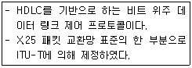
- PPP
- ADCCP
- LAP-B
- SDLC
(정답률: 57%)
91. 하나의 메시지 단위로 저장-전달(Store-and-Forward) 방식에 의해 데이터를 교환하는 방식은?
- 메시지교환
- 공간분할회선교환
- 패킷교환
- 시분할회선교환
(정답률: 51%)
92. 동기전송에 대한 설명으로 틀린 것은?
- 송신기와 수신기가 동일한 클록을 사용하여 데이터를 송수신하는 방식이다.
- 송신기에서는 데이터 비트열을 전송하는 데 사용한 클록 신호를 수신기가 사용하여 타이밍 오류 없이 정확한 데이터 수신이 이루어지도록 하는 방식이다.
- 수신기가 데이터 블록의 시작과 끝을 정확히 인식하기 위한 프레임 레벨 동기화를 요구한다.
- 동기전송에서 사용되는 문자 위주의 프레임 중 전송제어 문자인 STX는 프레임 시작과 끝을 나타낸다.
(정답률: 58%)
93. 오류 제어 방식 중 stop-and-wait ARQ에 대한 설명으로 틀린 것은?
- 연속적인 데이터 프레임을 전송하고 에러가 발생한 데이터 프레임만 재전송한다.
- 구현이 간단하고 송신측에서 최대 프레임 크기의 버퍼 1개만 있어도 된다.
- 각각의 프레임에 대해서 확인 메시지가 필요하다.
- 데이터 프레임의 순서 번호를 이용하여 프레임의 중복 수신여부를 알 수 있다.
(정답률: 53%)
94. 아날로그-디지털 부호화 방식인 송신측 PCM(Pulse Code Modulation) 과정을 순서대로 바르게 나타낸 것은?
- 표본화(Sampling) → 양자화(Quantization) → 부호화(Encoding)
- 양자화(Quantization) → 부호화(Encoding) → 표본화(Sampling)
- 부호화(Encoding) → 양자화(Quantization) → 표본화(Sampling)
- 표본화(Sampling) → 부호화(Encoding) → 양자화(Quantization)
(정답률: 66%)
95. 다음 중 OSI 7 계층의 기본 개념으로 거리가 가장 먼 것은?
- 시스템 연결을 위한 표준 개발을 위하여 공통적인 기법을 제공한다.
- 시스템 간의 정보 교환을 위한 표준 설정을 가질 수 있도록 한다.
- 응용 프로그램 개발을 위한 언어 선택을 제공한다.
- 각 계층에 대해 서로 표준을 생산적으로 발전시킬 수 있도록 개념적, 기능적인 골격을 제공하는 역할을 한다.
(정답률: 72%)
96. 데이터 전송 방식 중 비동기 전송 방식에 대한 설명으로 틀린 것은?
- 시작(start) 비트는 이진수의 “0”의 값을 가지며, 한 비트의 길이를 갖는다.
- 정지(stop) 비트는 이진수의 “1”의 값을 가지며, 최소 길이는 보통 정상비트의 1~2배로 규정한다.
- 수신기는 자신의 클록신호를 사용하여 회선을 샘플링하여 각 비트의 값을 읽어내는 방식이다.
- 전송할 데이터를 블록으로 구성하여, 송신기와 수신기가 동일한 클록을 사용하여 데이터를 송ㆍ수신한다.
(정답률: 48%)
97. RTCP(Real-Time Control Protocol)의 기능으로 틀린 것은?
- 데이터 분배에 대한 피드백을 제공한다.
- RTP 소스의 transport-level의 identifier를 전달한다.
- minimal session control information을 전송한다.
- 데이터 전송을 모니터링하고 최대한의 제어와 인증 기능을 제공한다.
(정답률: 43%)
98. 가상회선 패킷교환에 대한 설명으로 옳지 않은 것은?
- 패킷이 전송되기 전에 논리적인 연결설정이 이루어져야 한다.
- 모든 패킷이 동일한 경로로 전달되므로 항상 보내어진 순서대로 도착이 보장된다.
- 링크 상에 설정된 하나의 가상회선 단위로 패킷의 손상시 복구가 가능하다.
- 연결 설정시에 경로가 미리 결정되기 때문에 각 노드에서 데이터 패킷의 처리 속도가 매우 느리다.
(정답률: 50%)
99. stop-and-wait 흐름제어방식보다 sliding windows 흐름제어방식을 적용하는데 가장 적당한 선로 환경은?
- 에러가 많은 선로
- 데이터의 전송이 많은 선로
- 전송 지연이 긴 선로
- 고속이 요구되는 선로
(정답률: 36%)
100. 호스트의 물리 주소를 통하여 논리 주소인 IP 주소를 얻어오기 위해 사용되는 프로토콜은?
- ICMP
- IGMP
- ARP
- RARP
(정답률: 54%)